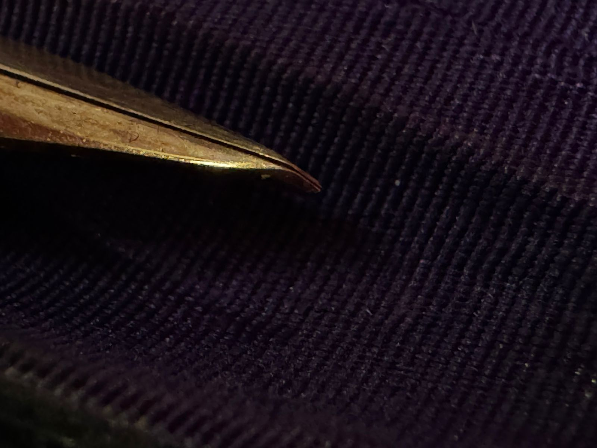
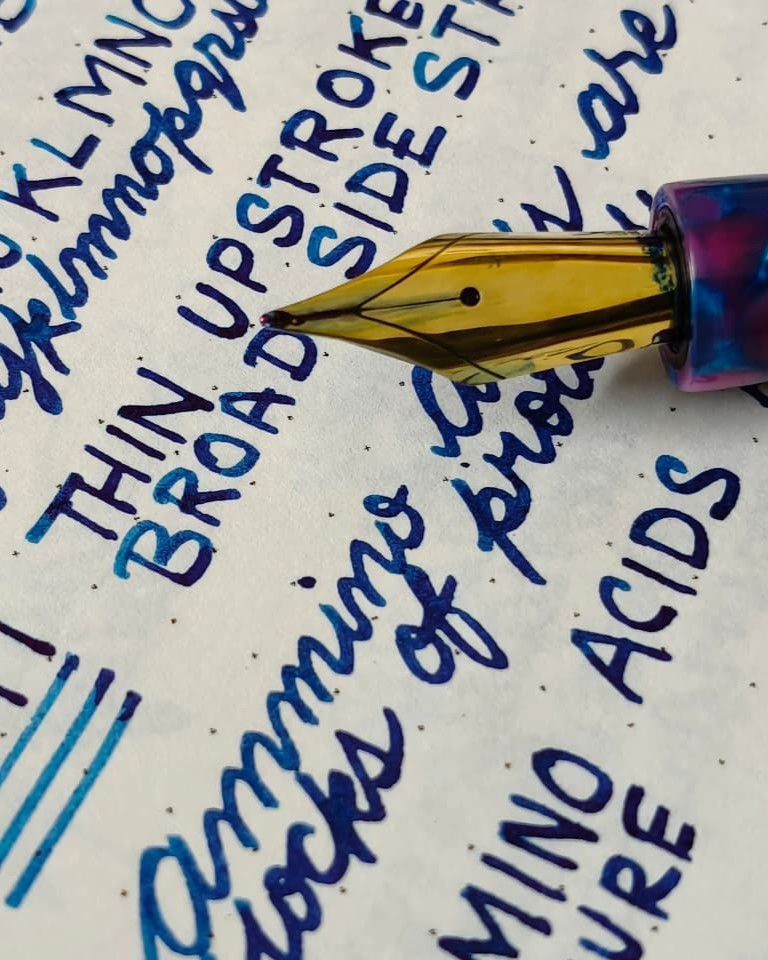
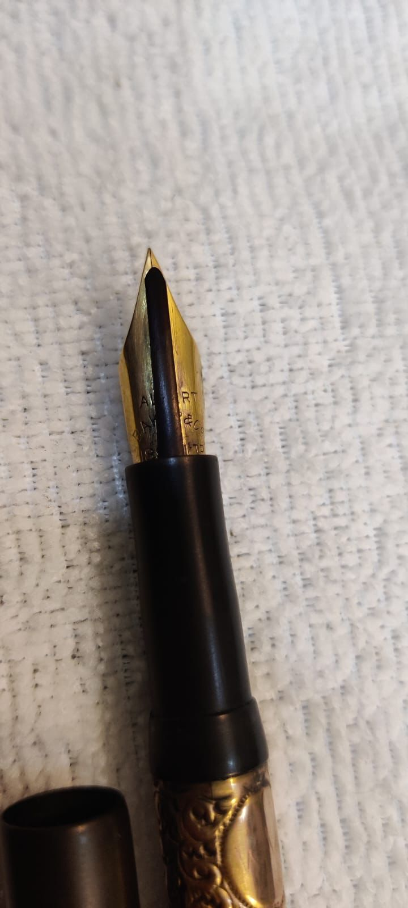
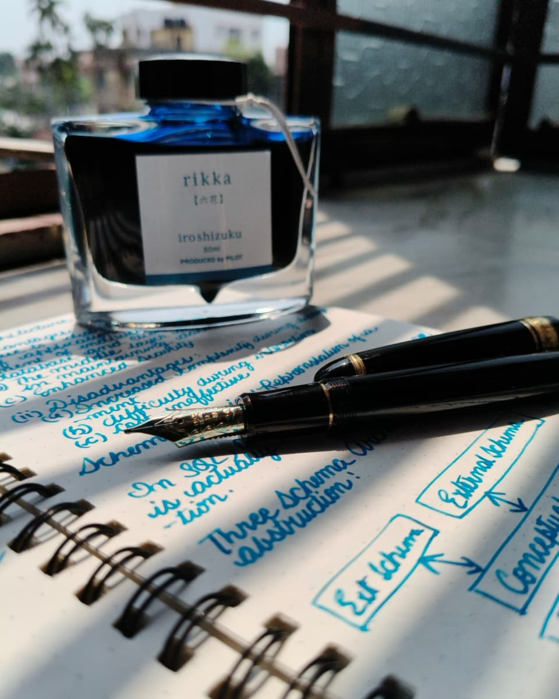
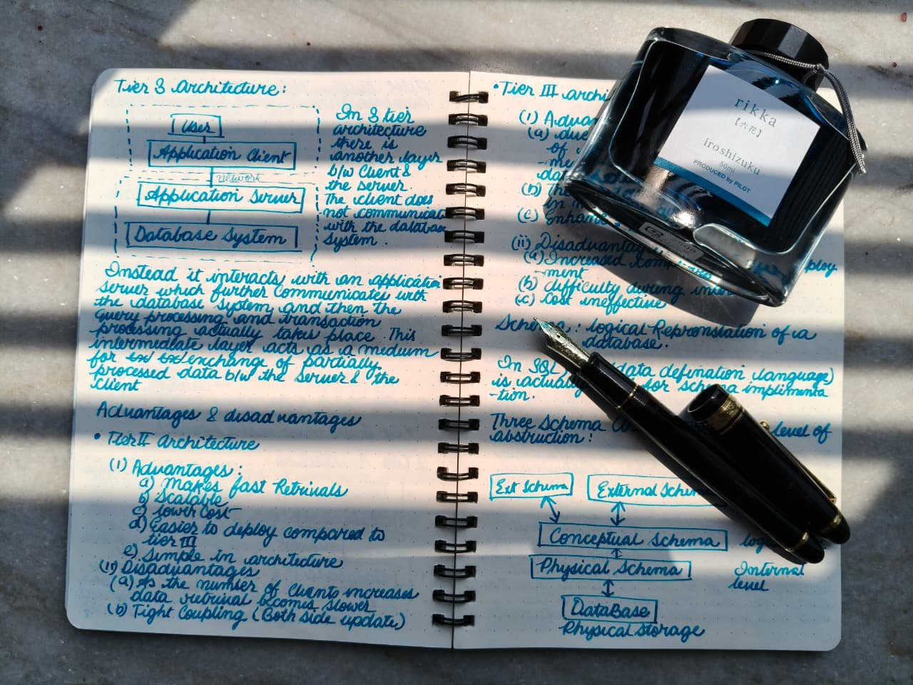
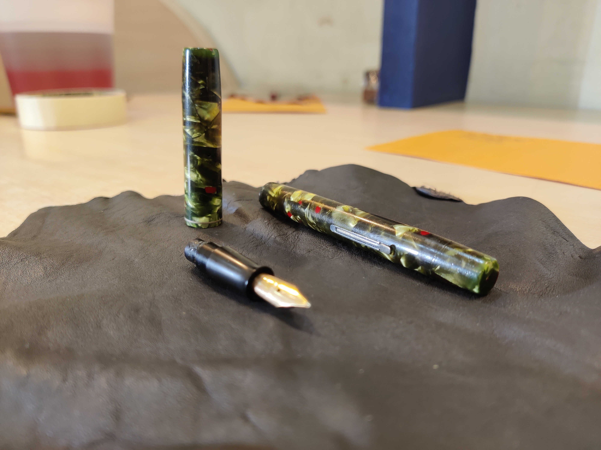
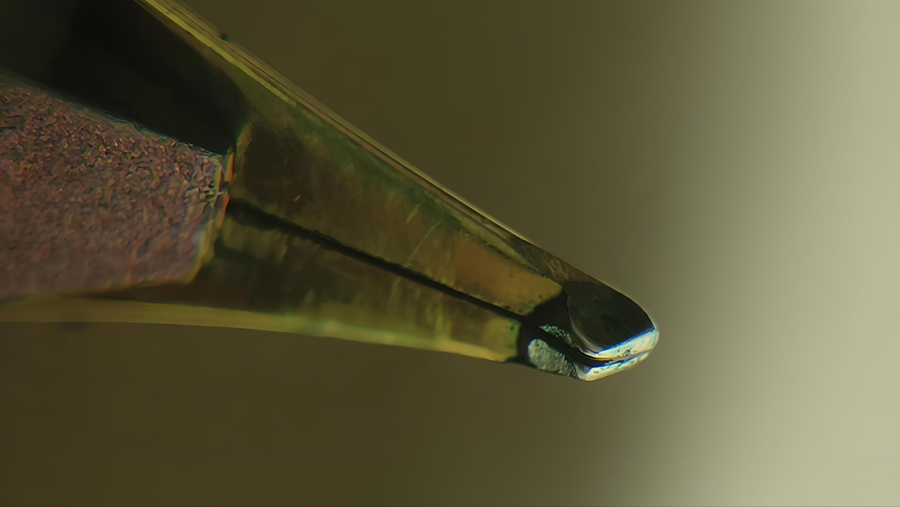
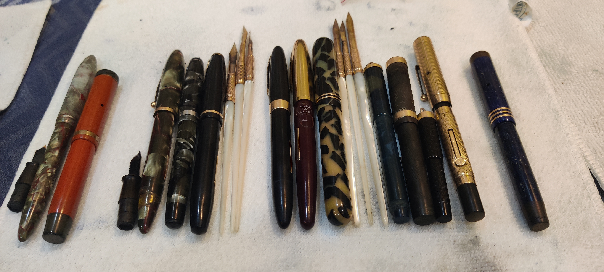
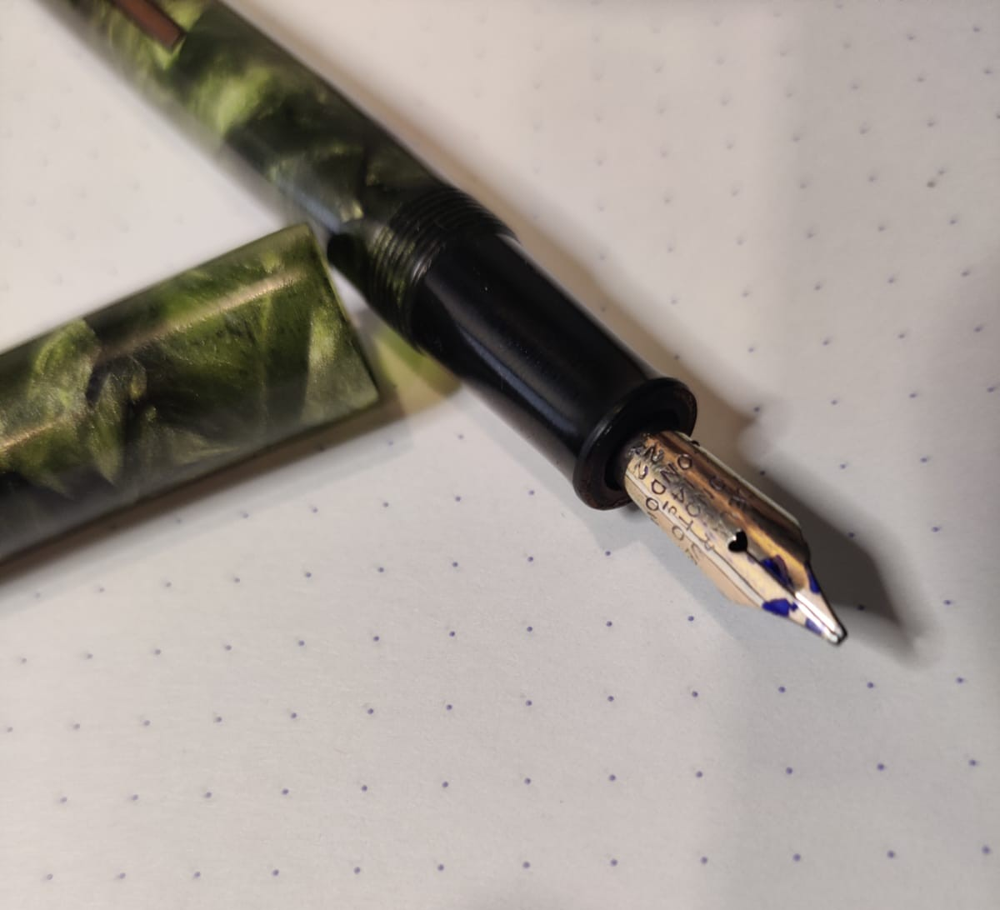

Visual Archive
Studio Gallery
A curated archive of restored nibs, bespoke grinds, vintage masterpieces, and writing instruments refined through careful craftsmanship.
A curated archive of restored nibs, bespoke grinds, vintage masterpieces, and writing instruments refined through careful craftsmanship.
Every piece reflects precision tuning, restoration artistry, and expressive writing character.














